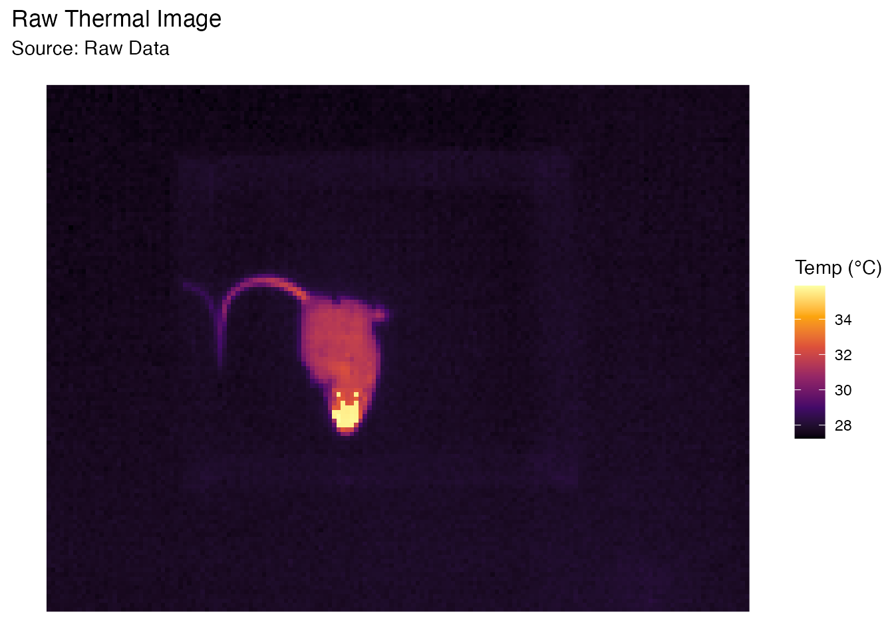
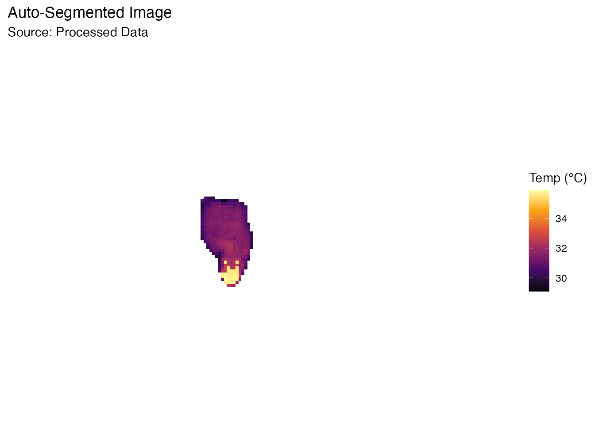
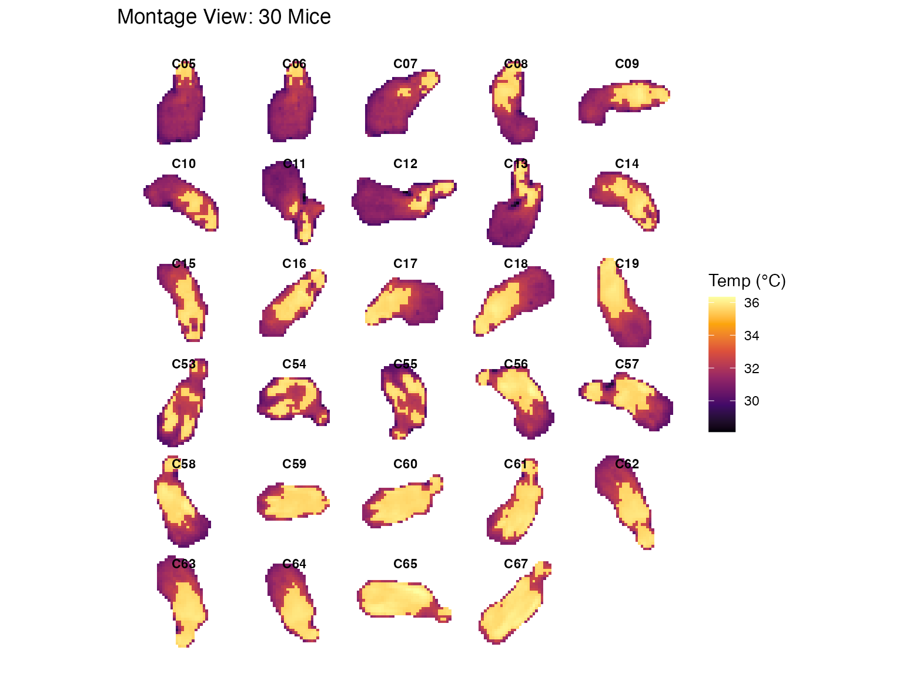
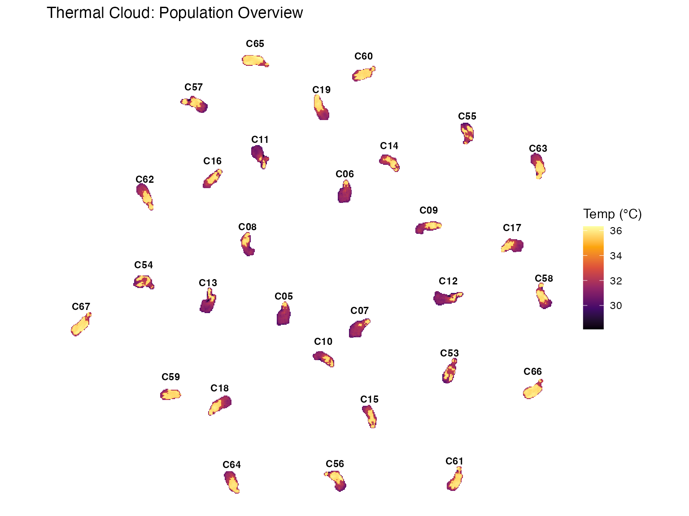

Welcome to BioThermR! BioThermR helps you process thermal images for biological research. This guide covers the core loop: Import -> Segment -> Measure -> Visualize.
First, load the package:
1. Import Thermal Data
BioThermR includes example data to help you get started quickly. We
will load a sample .raw thermal file provided with the
package.
# 1. Locate the example file provided with BioThermR
raw_path <- system.file("extdata", "C05.raw", package = "BioThermR")
# 2. Read the thermal data using read_thermal_raw
obj <- read_thermal_raw(raw_path)
# 3. Quick sanity check
# This confirms the data is loaded and has the correct dimensions
print(paste("Filename:", obj$meta$filename))
#> [1] "Filename: C05.raw"
print(paste("Dimensions:", obj$meta$dims[1], "x", obj$meta$dims[2]))
#> [1] "Dimensions: 120 x 160"2. Visualize Raw Data
Let’s look at the raw image. Notice the background is around 28°C (purple/black) and the subject is >32°C (yellow/red).
plot_thermal_heatmap(obj, use_processed = FALSE) +
ggtitle("Raw Thermal Image")
3. Automated Segmentation
Instead of manually guessing a temperature threshold, BioThermR can automatically separate the subject from the background using Otsu’s method and morphological operations.
This is particularly useful for batch processing where lighting or background temperatures might vary slightly.
# Apply automated segmentation
# method = "otsu": Automatically calculates the best threshold
# keep_largest = TRUE: Removes small noise artifacts, keeping only the animal
obj <- roi_segment_ebimage(obj, method = "otsu", keep_largest = TRUE)
#> Auto-Segmentation: Kept largest object ( 401 pixels )
# Visualize the result (Processed Data)
# Note how the background is now clean (NA)
plot_thermal_heatmap(obj, use_processed = TRUE) +
ggtitle("Auto-Segmented Image")
4. Calculate Statistics
Now that the background is gone (set to NA), we can calculate accurate body temperature metrics.
# Compute Min, Max, Mean, Median, etc.
obj <- analyze_thermal_stats(obj)
# Show the results
print(obj$stats)
#> Metric Value
#> 1 Min 29.10121918
#> 2 Max 35.88959503
#> 3 Mean 31.59486416
#> 4 Median 31.46377563
#> 5 SD 1.28356576
#> 6 Q25 31.00030899
#> 7 Q75 31.72277069
#> 8 IQR 0.72246170
#> 9 CV 0.04062577
#> 10 Peak_Density 31.527738445. Batch Processing & Montage
BioThermR shines when processing large datasets. The package includes
30 sample raw images in the extdata
folder. We will load, segment, and visualize all of them in a few lines
of code.
# 1. Get the path to the folder containing the 30 raw files
data_folder <- system.file("extdata", package = "BioThermR")
print(paste("Reading batch from:", data_folder))
#> [1] "Reading batch from: /private/var/folders/_b/gx4lc14d5ssf7pl9qlkl32r80000gn/T/RtmpASfHej/temp_libpath3567299b7748/BioThermR/extdata"
# 2. Read the entire batch
# Note: We use pattern = ".raw" to ensure we only load the raw thermal files
batch_list <- read_thermal_batch(data_folder, pattern = "\\.raw$")
#> Reading 29 files...
#> Batch read completed. Imported 29 files.
# 3. Batch Segmentation (Automated)
# We use lapply to apply the 'roi_segment_ebimage' function to every image in the list
# This automatically removes the background for all 30 mice
batch_list_clean <- lapply(batch_list, roi_segment_ebimage)
#> Auto-Segmentation: Kept largest object ( 401 pixels )
#> Auto-Segmentation: Kept largest object ( 388 pixels )
#> Auto-Segmentation: Kept largest object ( 419 pixels )
#> Auto-Segmentation: Kept largest object ( 342 pixels )
#> Auto-Segmentation: Kept largest object ( 356 pixels )
#> Auto-Segmentation: Kept largest object ( 327 pixels )
#> Auto-Segmentation: Kept largest object ( 390 pixels )
#> Auto-Segmentation: Kept largest object ( 455 pixels )
#> Auto-Segmentation: Kept largest object ( 409 pixels )
#> Auto-Segmentation: Kept largest object ( 330 pixels )
#> Auto-Segmentation: Kept largest object ( 325 pixels )
#> Auto-Segmentation: Kept largest object ( 320 pixels )
#> Auto-Segmentation: Kept largest object ( 388 pixels )
#> Auto-Segmentation: Kept largest object ( 419 pixels )
#> Auto-Segmentation: Kept largest object ( 414 pixels )
#> Auto-Segmentation: Kept largest object ( 366 pixels )
#> Auto-Segmentation: Kept largest object ( 353 pixels )
#> Auto-Segmentation: Kept largest object ( 347 pixels )
#> Auto-Segmentation: Kept largest object ( 399 pixels )
#> Auto-Segmentation: Kept largest object ( 407 pixels )
#> Auto-Segmentation: Kept largest object ( 382 pixels )
#> Auto-Segmentation: Kept largest object ( 298 pixels )
#> Auto-Segmentation: Kept largest object ( 349 pixels )
#> Auto-Segmentation: Kept largest object ( 362 pixels )
#> Auto-Segmentation: Kept largest object ( 412 pixels )
#> Auto-Segmentation: Kept largest object ( 393 pixels )
#> Auto-Segmentation: Kept largest object ( 371 pixels )
#> Auto-Segmentation: Kept largest object ( 387 pixels )
#> Auto-Segmentation: Kept largest object ( 389 pixels )
# 4. Visualization A: Gap-Free Montage
p1 <- plot_thermal_montage(batch_list_clean, ncol = 5, padding = 2, text_size = 3) +
ggtitle("Montage View: 30 Mice")
#> Scanning objects for bounding box dimensions...
#> Montage Layout: 6 x 5 | Cell Size: 41 x 37
print(p1)
# 5. Visualization B: Thermal Cloud
p2 <- plot_thermal_cloud(batch_list_clean, spread_factor = 1.5, jitter_factor = 0.5, show_labels = TRUE) +
ggtitle("Thermal Cloud: Population Overview")
#> Processing objects...
#> Generating layout for 29 objects...
print(p2)
6. Compile Statistics to Data Frame
Finally, we extract the temperature metrics (Mean, Max, Min, etc.) from all 30 segmented images and compile them into a single table. This data frame is ready for statistical analysis (ANOVA, t-test) or export to CSV.
# 1. Calculate stats for each image in the list
# This adds a 'stats' slot to each BioThermR object
batch_list_stats <- lapply(batch_list_clean, analyze_thermal_stats)
# 2. Compile into a tidy data frame
# Rows = Images, Columns = Metrics
df_results <- compile_batch_stats(batch_list_stats)
#> Compiling statistics for 29 images...
# 3. View the first few rows
head(df_results)
#> Filename Min Max Mean Median SD Q25 Q75
#> 1 C05.raw 29.10122 35.88960 31.59486 31.46378 1.283566 31.00031 31.72277
#> 2 C06.raw 29.58407 35.84299 31.68077 31.51830 1.262623 31.08210 31.87953
#> 3 C07.raw 29.41834 35.88261 31.84558 31.68188 1.387581 31.13662 32.00221
#> 4 C08.raw 28.86848 35.89514 32.67292 31.73745 2.031803 31.21300 35.56901
#> 5 C09.raw 29.84530 36.06936 32.94407 31.96381 2.038136 31.40044 35.59897
#> 6 C10.raw 28.88244 35.82200 32.44315 31.83065 1.841554 31.26412 32.59012
#> IQR CV Peak_Density
#> 1 0.7224617 0.04062577 31.52774
#> 2 0.7974343 0.03985456 31.55971
#> 3 0.8655910 0.04357217 31.77638
#> 4 4.3560166 0.06218614 31.43158
#> 5 4.1985264 0.06186655 31.59204
#> 6 1.3260002 0.05676249 31.43307